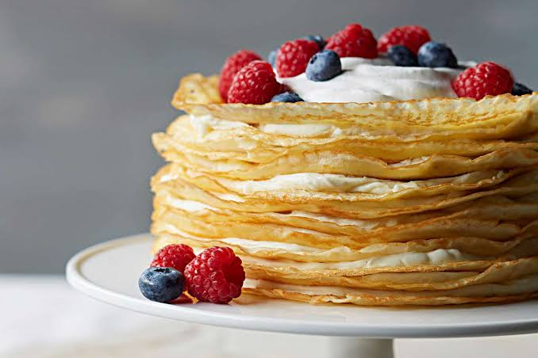

About Crepes
Crepes are thin, delicate pancakes that originated in France. They are made from a simple mixture of flour, eggs, milk, butter, and sugar. Unlike regular pancakes, crepes are thinner and softer, making them perfect for folding or rolling with different fillings. They can be enjoyed as a sweet dessert with fruits, chocolate, and whipped cream or as a savory meal with cheese, ham, and vegetables.

Recipe Information
| Preparation Time | 10 minutes |
|---|---|
| Cooking Time | 20 minutes |
| Servings | 6–8 crepes |
| Difficulty | Easy |
Ingredients
- 1 cup all-purpose flour
- 2 large eggs
- 1 1/2 cups milk
- 2 tablespoons melted butter
- 1 tablespoon sugar
- 1 teaspoon vanilla extract
- 1/4 teaspoon salt
- Butter for greasing the pan
Cooking Instructions
- In a large mixing bowl, combine the flour, sugar, and salt.
- Add the eggs and milk. Whisk until the mixture becomes smooth.
- Pour in the melted butter and vanilla extract, then mix well.
- Let the batter rest for about 15–20 minutes for a smoother texture.
- Heat a non-stick frying pan over medium-low heat and lightly grease it with butter.
- Pour a small amount of batter into the pan and quickly tilt the pan to spread it into a thin circle.
- Cook for about 1–2 minutes until the edges begin to lift and the bottom is lightly golden.
- Carefully flip the crepe and cook the other side for about 30 seconds.
- Repeat the process until all the batter is used.
- Serve with your favorite toppings, such as bananas, strawberries, chocolate, or whipped cream.
Watch How to Make Crepes
Watch the video below to learn how to prepare delicious homemade crepes.
Recipe Feedback Form
We would love to hear your thoughts about this homemade crepe recipe!